Vessel - How to Build Your Very Own Open Sonar Vessel
This page will run you through how to actually construct your very own Open Sonar Vessel!
Learning outcomes:
- Become familiar with basic vessel construction
- Be able to visualize vessel buoyancy and weight distribution
- Construct the frame of an autonomous surface vehicle
What you will need:
- 1 can PVC Cement (118ml)
- 1 10ft 4" PVC Sewer Pipe
- 4 PVC 90-degree T-Shaped Elbows
-4 PVC 4" Sewer Caps
- 2 PVC Long 90-degree Elbow 4" Hubs
-2 PVC 4" Threaded Plugs
- 2 PVC 4" Threaded Female Adaptor
- reciprocating saw
- 8 2" bolts
- 32 Washers that fit bolts
- 16 nuts for bolts
- 2 2" eyebolts
- 4 washers that fit eyebolts
- 4 nuts that fit eyebolts
- 1 tube marine grade silicone sealant (88ml)
- impact drill
- vice grips
- socket set
- measuring tape
- 12' 1x4 board
- 2x4 piece of wood (4.5" in length)
- 15" x 36" wooden board
- 14 small screws
We recommend having:
- A flat surface for construction (i.e., a table)
- A supervisor nearby if you're new to power tools
- Access to the outdoors when using PVC cement
- A great time!
Step 1: Cut PVC Pipe
1. Place the PVC Pipe ona flat surface. We recommend placing a bucket under the pipe to catch any debris from cutting,
as well as having someone hold the pipe down.
2. Using the reciprocating saw, cut the PVC pipe into:
- Six 12" pieces
-Four 5" pieces
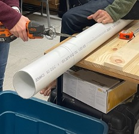
Caps
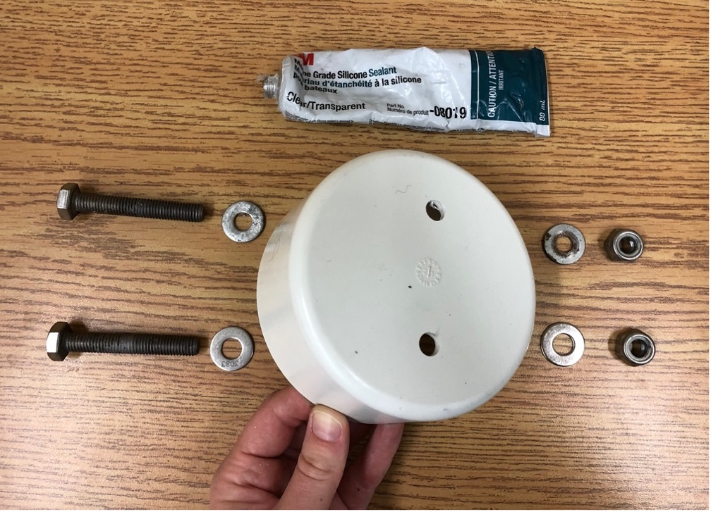
1. Using a smaller drill bit, drill two holes 2.25" apart into a PVC cap. If the holes are too small for
the bolt to fit through, size up the drill bit.
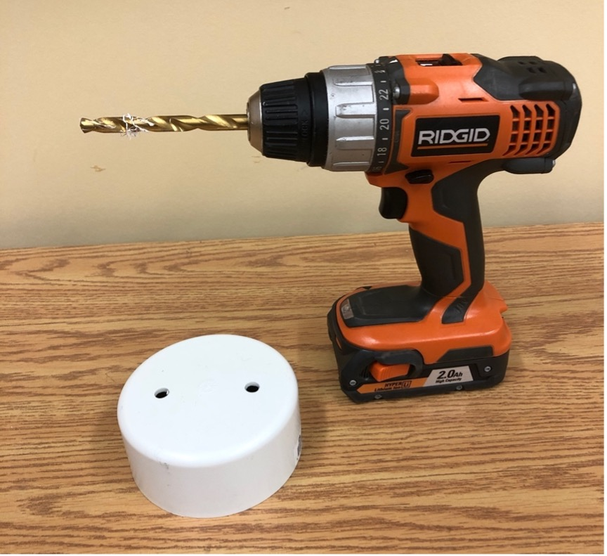
2. Smear some silicone sealant around the inside of one of the holes.
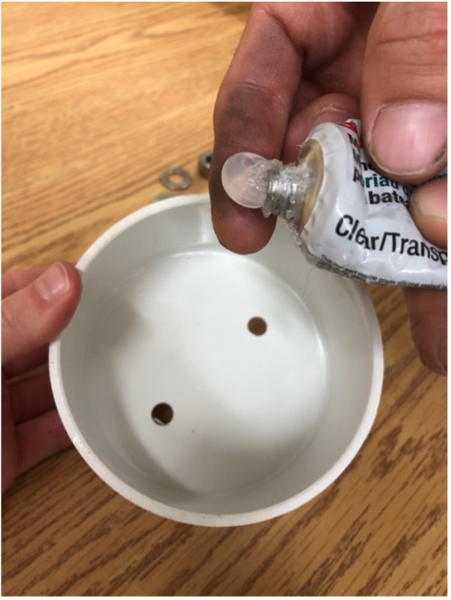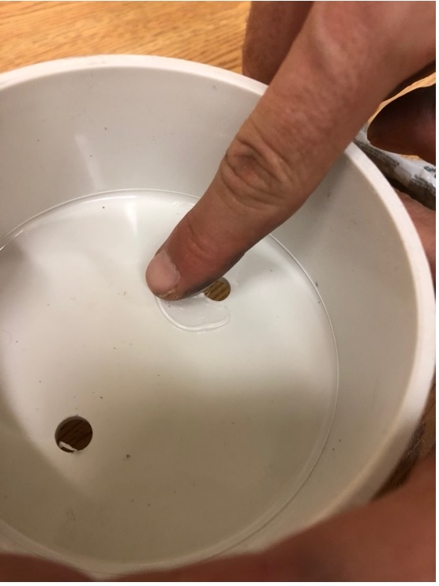
3. Place a 2" bolt through a washer and then through the cap from the inside. Use a socket set to push the bolt
through if it is snug.

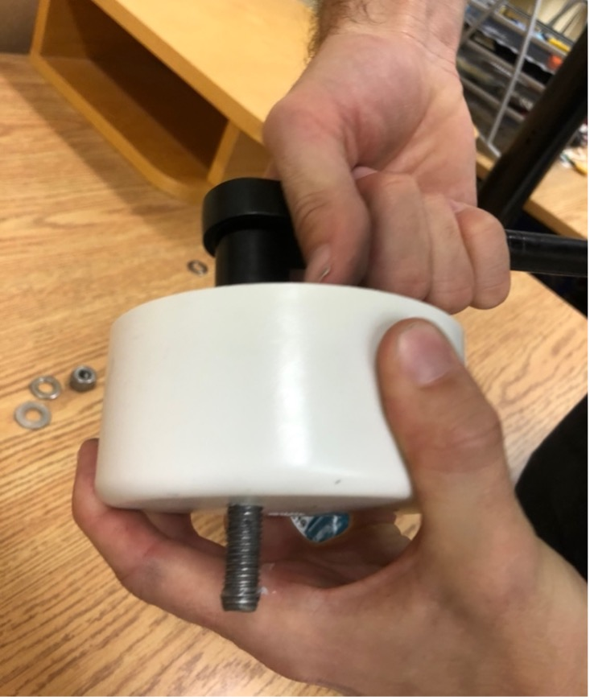
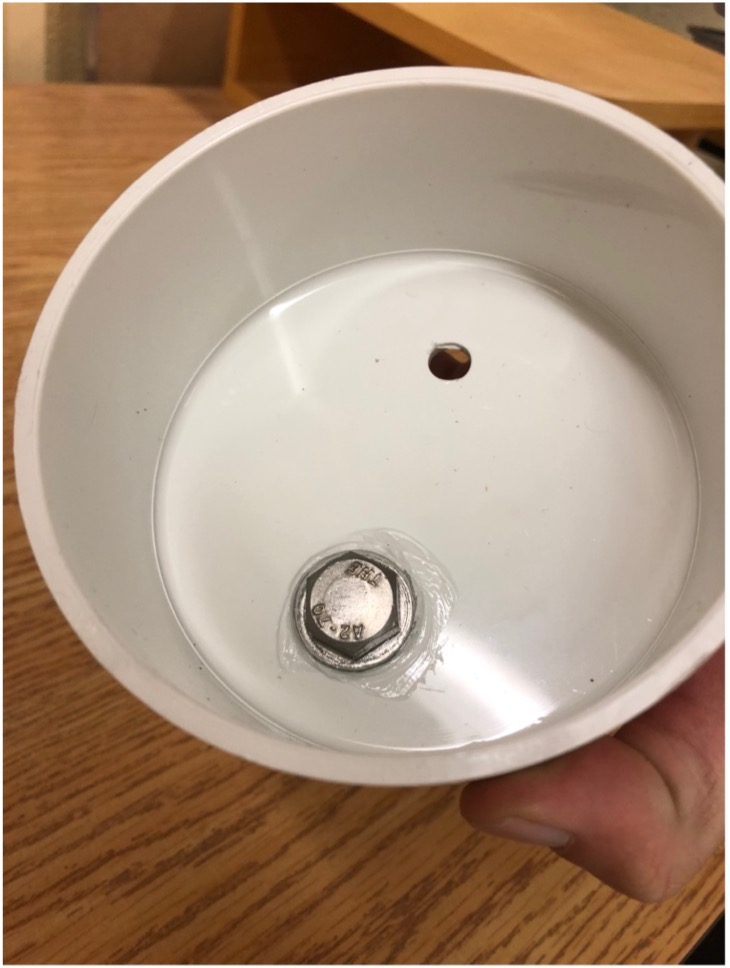
4. Apply a layer of silicone sealant around the bolt on the top of the cap.
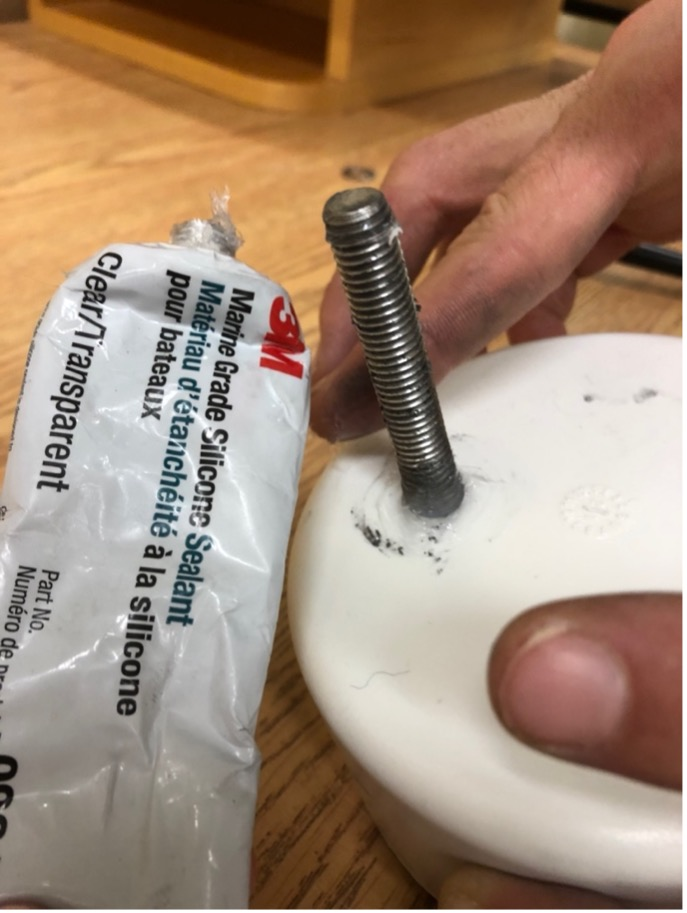
5. Place the washer over the bolt followed by the nut
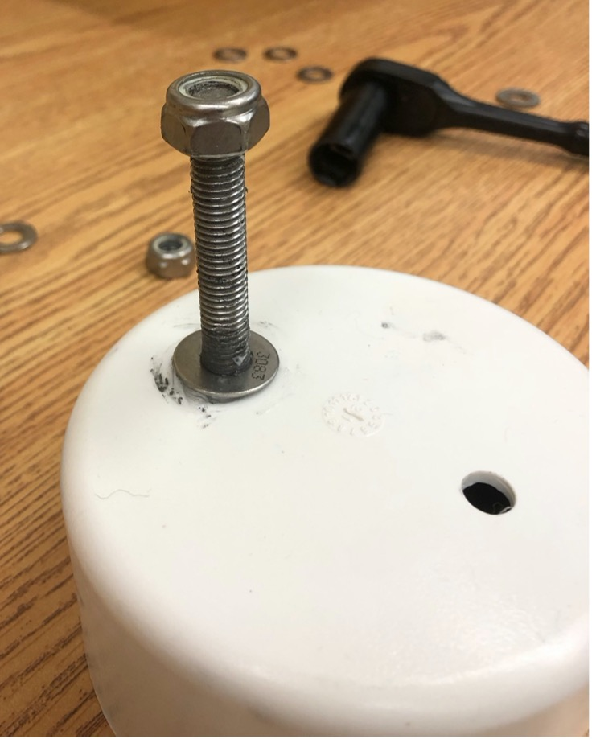
6. Screw the nut snug to the washer. It may help to use vice grips to hold the bolt on the inside of the cap
and use a socket set to tighten the nut.
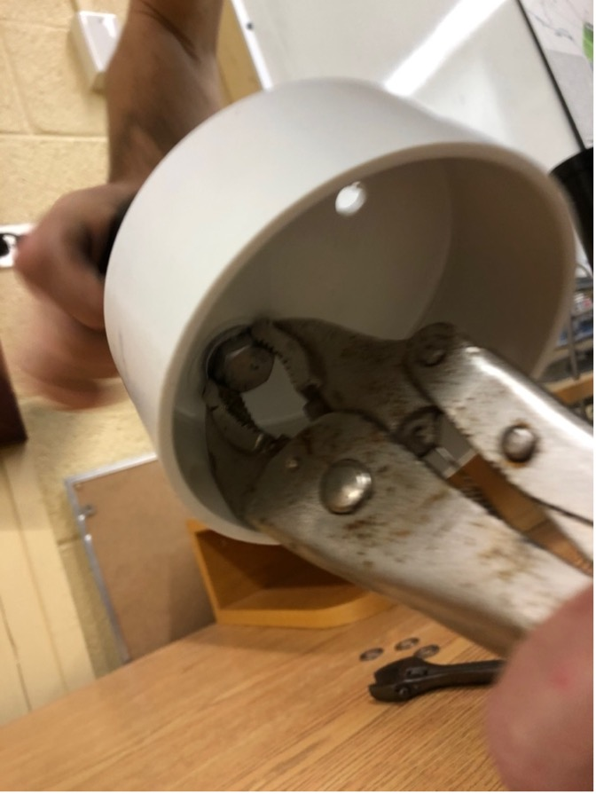
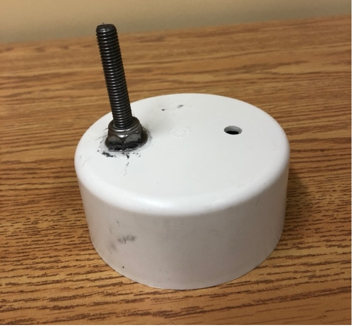
7. Repeat steps 2 to 6 for the other hole.
8. Repeat steps 1 to 7 for a total of four PVC caps.
9. Drill a hole into the center of an unused PVC cap to fit the eyebolt.
10. Similar to the steps above, apply silicone sealant around the hole on the top of the cap. Put the eyebolt through
a nut, then a washer, and then the PVC cap. Smear silicone sealant around the bolt on the inside of the cap. Place a washer
and then a nut onto the bolt and tighten.
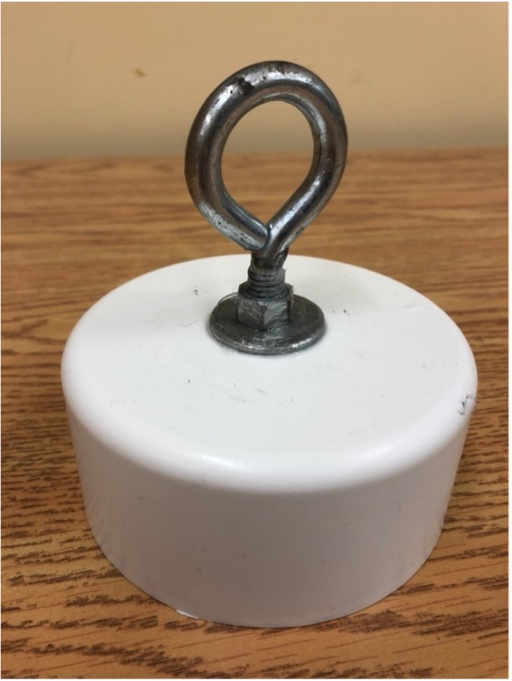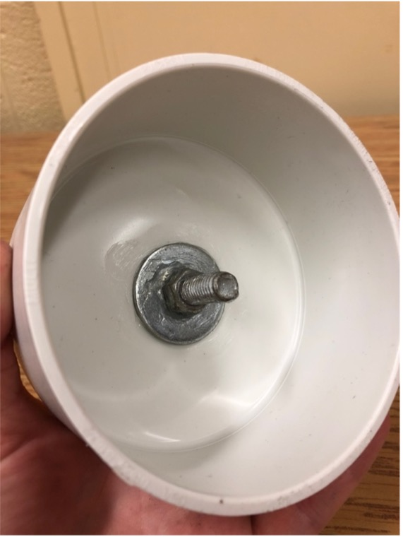
11. Repeat step 10 for the last unused cap.
12. You should now have four caps with two bolts and two caps with one eyebolt as pictured below.
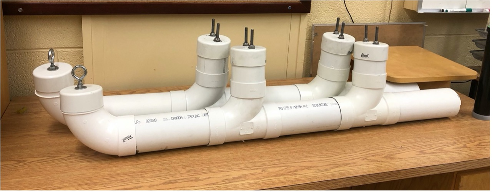